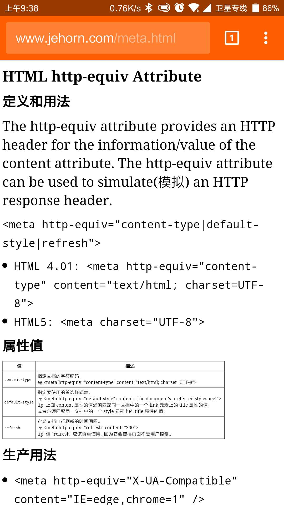

http-equiv 定义和用法
The http-equiv attribute provides an HTTP header for the information/value of the content attribute.
The http-equiv attribute can be used to simulate(模拟) an HTTP response header.
<meta http-equiv="content-type|default-style|refresh">
-
HTML 4.01: <meta http-equiv="content-type" content="text/html; charset=UTF-8"> HTML5: <meta charset="UTF-8">
属性值
| 值 | 描述 |
|---|---|
content-type |
指定文档的字符编码。 eg.<meta http-equiv="content-type" content="text/html; charset=UTF-8"> |
default-style |
指定要使用的首选样式表。 eg.<meta http-equiv="default-style" content="the document's preferred stylesheet"> tip: 上面 content 属性的值必须匹配同一文档中的一个 link 元素上的 title 属性的值， 或者必须匹配同一文档中的一个 style 元素上的 title 属性的值。 |
refresh |
定义文档自行刷新的时间间隔。 eg.<meta http-equiv="refresh" content="300"> tip: 值 "refresh" 应该慎重使用，因为它会使得页面不受用户控制。 |
<meta>生产用法
-
<meta http-equiv="X-UA-Compatible" content="IE=edge,chrome=1" />IE=edge告诉IE使用最新的引擎渲染网页，chrome=1则可以激活Chrome Frame。 -
<meta http-equiv="Content-Type" content="text/html;charset=utf-8">规定网页编码 -
<meta http-equiv="Cache-Control" content="max-age=604800" />设置http cache时间，在快速迭代的项目中，我们可以设置max-age=604800s，也就是七天 -
<meta content="always" name="referrer"> -
<meta name="viewport" content="width=device-width, initial-scale=1.0"> -
<meta name="applicable-device" content="pc">申明网站为pc站，避免被转码 -
<meta http-equiv="Cache-Control" content="no-transform" />禁止浏览器转码 -
<meta name="format-detection" content="telephone=no">禁止浏览器识别手机号码 -
<meta name="viewport" content="width=device-width, initial-scale=1.0, maximum-scale=1.0, user-scalable=no">声明视窗大小，禁止用户缩放，移动端必备 -
<meta name="renderer" content="webkit">规定360安全浏览器使用webkit内核进行渲染 -
<meta name="theme-color" content="#ff5f00">Android Lollipop 中的 Chrome 39 增加 theme-color meta 标签，用来控制选项卡颜色。#ff5f00
 SEO 优化
-
<meta name="description" content="网站描述"> -
<meta name="keywords" content="关键词1,关键词2"> -
<meta name="author" content="name, email@gmail.com">定义网页作者 -
<meta name="robots" content="index,follow"> <!-- 搜索引擎抓取 index,follow 为默认值 -->定义网页搜索引擎索引方式，robotterms是一组使用英文逗号「,」分割的值，通常有如下几种取值：none，noindex，nofollow，all，index和follow。
meta标签的robots - more >